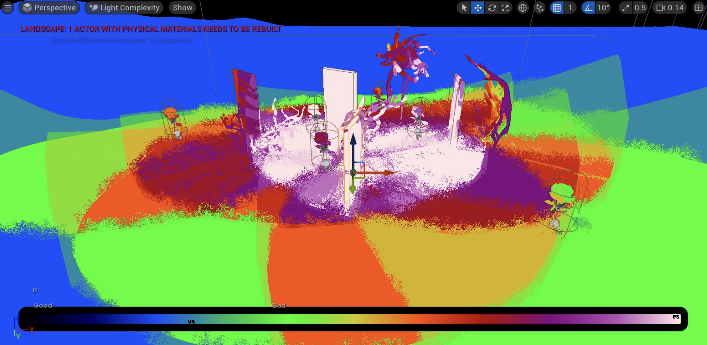
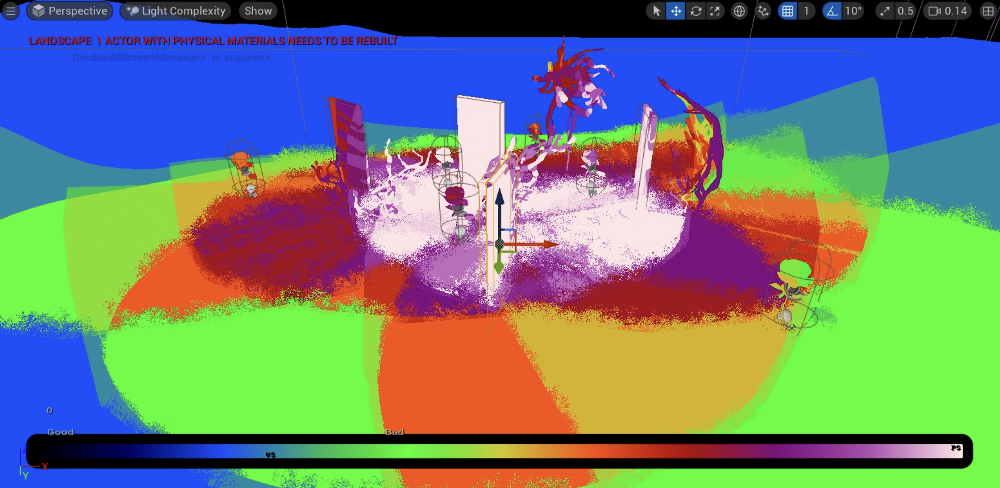
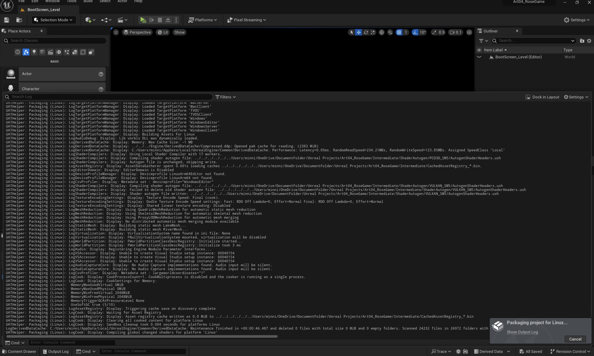
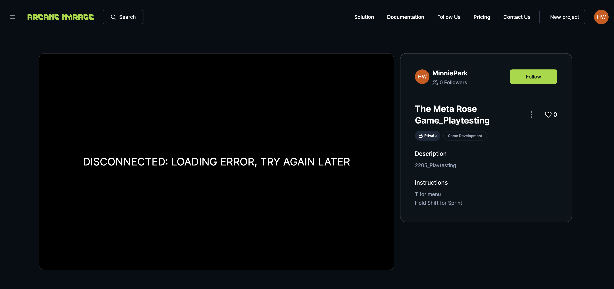
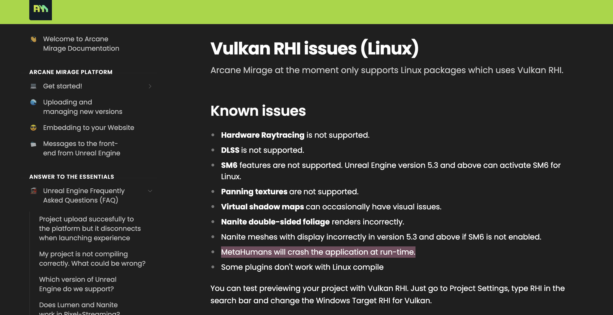
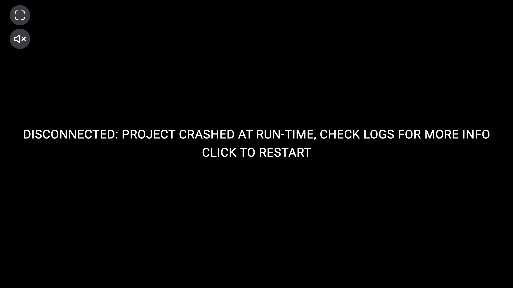
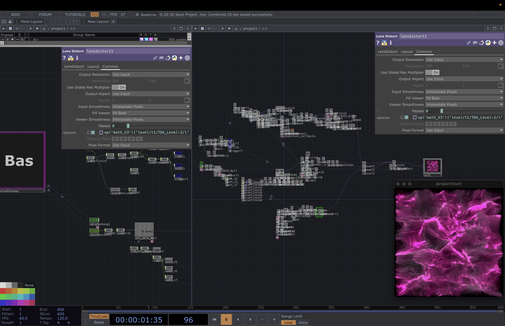
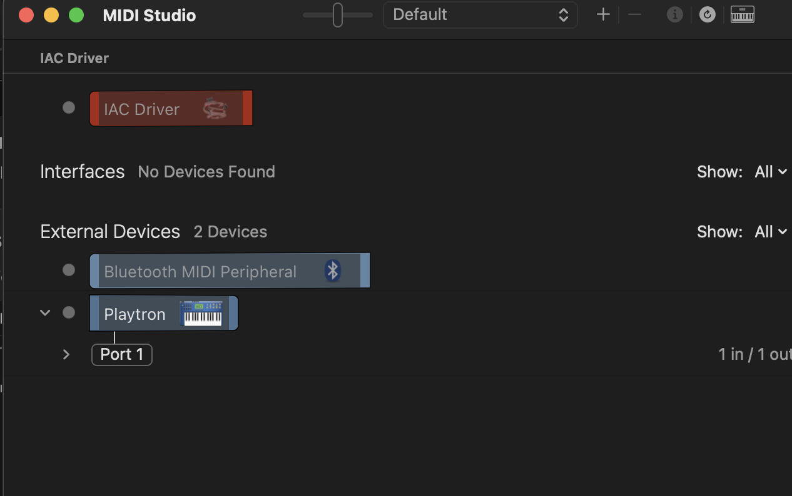
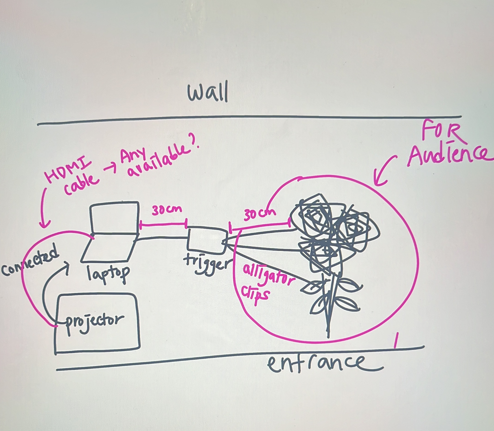
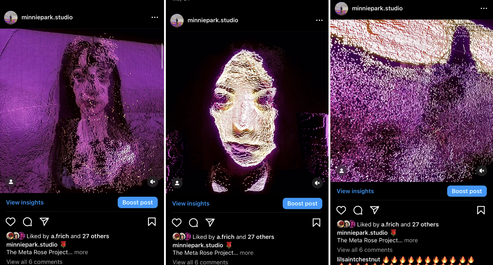

WEEK 11
2005 - 2605WORK PROGRESS
Artwork 4,5,6: Unreal Game + TouchDesigner + MV
 

Game:
With the game, before I started packaging and building the file, I worked on optimising the entire project file. I watched many tutorials on how to optimise the file and reduced all the texture file sizes, ensuring that the use of lighting is not excessive and deleting anything that is not used.
   
I tried pixel streaming with a platform called "Arcane Mirage." After some research, I found that this is one of the popular platforms used by Unreal game developers for easy access to their projects via web browsers. They offer several subscription plans for uploading projects and using their server as the host for the game. They also have a token system, where tokens are consumed every minute the players play the game in the browser.
First, I tried packaging the game as a Linux build and attempted to upload it, as Linux is promoted as faster in loading the game and more efficient in terms of tokens. However, after uploading the game, it kept crashing and didn’t properly launch.
After the initial upload, I reached out to the support team via email and provided the log file for debugging. They responded, informing me that Linux does not support Metahuman, as well as other functions including hardware ray tracing, Nanite textures, and other effects.
So, I tried again with a Windows build, and this time the game launched successfully. However, the hair physics were not working properly, and it kept crashing after a short while. Additionally, the multiplayer feature was not functioning. Even after trying to play with different computers by opening the browser, the multiplayer just wasn't working at all. So, I sent another email to the support team to figure out how to solve these issues.
I wanted to implement pixel streaming which allows the game to be hosted online so it can be played in the web browser as the multiplayer game. Otherwise, the game file has to be downloaded to all the computers and it will also require some high specs to be able to play the game smoothly. I will try with pixel streaming for another week, and if I still can’t figure out how to solve the problem, I might have to stick to the last resort of downloading the game.
Since game is just left to be packaged, the main focus of the week was to finish touchdesigner piece and start working on the Music video.

With the interactive piece, I worked on combining all three visuals into one project and altered them to have one source output as the result, while still enabling switching between visuals. There are a total of 15 visual sources that the audience can switch to. After combining the visuals, they are then connected to Ableton, allowing the audience to trigger sound effects.
In Ableton, I used a drum rack, which can contain different sounds in one track. When this track is connected to TouchDesigner, each of the sounds can be connected individually.

After connecting them together, I tried connecting to the Playtronica, but I had some connection issues where my computer wouldn’t recognise the device. I tried many other methods, but none were working. I contacted the support team of Playtronica via email, and they provided me with contact information for direct communication via WhatsApp. I had a 1:1 troubleshooting chat with their representative, and thanks to his help, I was able to connect the device properly, and it's now recognised by the computer as a MIDI device!
After ensuring that all necessary software and hardware are connected properly, I worked on implementing the visual effects that will be triggered by touch.
The effects will have two types. On one side, they will be pink, more sparkly, and colourful, while on the other side, they will be black or grey, distorted, glitchy, and more on the darker side. The sound effects will also follow the mood of the visuals: the pink side will be sparkly, uplifting, and rising, while the other side will sound glitchy and have descending notes.
The triggers are also mapped to change the visuals, switching between them and corresponding sound effects as well.
With the music video, I've been thinking about the title, the message, and the lyrics. The theme of the project revolves around the two opposite sides of positive and negative emotions. Under the umbrella of this concept, I wanted to incorporate two contrasting elements into the song.
The first thing that came to mind was this line of the lyric: “I wish I was stronger.” On the outside, one might appear great, fabulous, and perfect, but inside, I wish I was stronger, I wish I could fight more, I wish I could have said something.
To truly highlight the contrast between the two, I will have different BPMs for each part. Starting with the bright side, when it suddenly changes to the other part, the BPM will increase significantly, accompanied by crazier drums and other intense sounds. I want to create the music with these two strong contrasts, almost as if two different songs are merged into one.
And this is the lyric of the song, “Fabulous, fearless”:
**Verse 1:**
Walking down the street, I own the night
Glowing like a star in the city lights
Whispers in the air, they say my name
"Fabulous, fearless," that's what they see
Perfect in their eyes, can't do no wrong
when this music fades, a different song
**Chorus:**
Wish I was stronger,
wish I could fight
Shadows that linger,
the doubts at night
Wish I was stronger
**Verse 2:**
Glitters in my steps, they say it’s a dream
"Fabulous, fearless," that's what they see
Perfect in their eyes that's who I be
when this music fades, a different song
**Chorus:**
Wish I was stronger,
wish I could fight more
Shadows that linger,
reflections collide
Wish I was stronger
**Outro:**
"Fabulous, fearless," that's what they see
"Fabulous, fearless," that's what they see
INDUSTRY ENGAGEMENT
Seventh Volunteer Exhibition Preparation Meeting 
I had a meeting with the Seventh Gallery curators to go over the setup of my piece as an interactive artwork.
I shared a simple drawing to explain how it works, what needs to be set up, and what equipment is required.
The opening night is next Wednesday, and it will be set up as an interactive piece only for that night since I cannot leave my laptop to run the work in the gallery for the rest of the three-week exhibition.
This was a great opportunity to see the audience's interaction and reaction to the piece! I feel really grateful to be involved in this exhibition!
SOCIAL MEDIA


This week, I posted two more visuals for the TouchDesigner piece, both using a point cloud system.
Another post featured a pink, wavy, flowy abstract visual, also using the point cloud system.
I shared the glitch/distortion effect and showed how it was triggered on that pink abstract visual. This served as a good introduction to the interactive piece.
I also shared Seventh Gallery's story about the opening night for the upcoming exhibition!